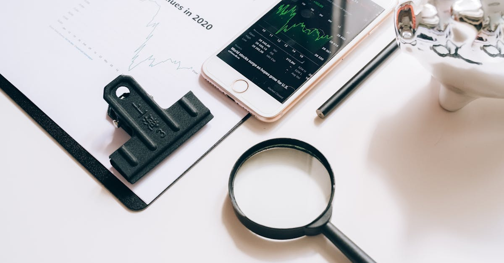

Fed et G7: Taux Stables, Inflation Énergétique, et Votre Épargne
La Fed maintient ses taux, le G7 s'inquiète de l'inflation énergétique. Découvrez comment l'IA peut protéger et optimiser votre épargne.
Le Dilemme des Banques Centrales : Stabilité ou Croissance ?
La Réserve fédérale américaine, pivot de l'économie mondiale, a récemment réaffirmé sa position en maintenant ses taux d'intérêt inchangés. Cette décision, largement anticipée par les marchés, n'est pas anodine ; elle reflète un équilibre délicat entre la nécessité de juguler une inflation persistante et le risque de freiner une croissance économique déjà fragile. Les décideurs politiques, non seulement aux États-Unis mais aussi à travers le Groupe des Sept (G-7), se trouvent face à un véritable casse-tête. D'un côté, des années de politique monétaire accommodante ont alimenté une bulle inflationniste que les hausses de taux successives ont tenté de dégonfler. De l'autre, des signes de ralentissement économique, particulièrement en Europe et en Chine, incitent à la prudence. Maintenir les taux stables, c'est envoyer un signal de confiance dans l'efficacité des mesures passées, tout en gardant une marge de manœuvre pour l'avenir. C'est aussi un aveu implicite que l'économie n'est pas encore suffisamment robuste pour supporter de nouvelles pressions sur le coût du crédit. « Nous sommes dans une phase d'observation critique, où chaque donnée économique est scrutée à la loupe », a récemment déclaré une analyste de renom, soulignant la volatilité et l'incertitude qui caractérisent le climat actuel. Les marchés financiers, bien que rassurés par l'absence de choc immédiat, restent sur le qui-vive, conscients que cette stabilité apparente repose sur des fondations potentiellement mouvantes. L'impact sur l'épargne et les investissements des particuliers est direct : une période de taux stables peut sembler sécurisante, mais elle masque des dynamiques inflationnistes qui continuent d'éroder le pouvoir d'achat, rendant la gestion active de son patrimoine plus cruciale que jamais. C'est ici que les outils d'investissement intelligent, capables d'analyser ces signaux faibles et d'adapter les stratégies en temps réel, prennent toute leur importance pour les épargnants soucieux de préserver et de faire fructifier leur capital.
L'Ombre de l'Inflation Énergétique : Un Risque Persistant
L'Ombre de l'Inflation Énergétique : Un Risque Persistant
Si les banques centrales ont choisi de maintenir le cap sur les taux, c'est qu'un spectre inquiétant plane toujours sur l'économie mondiale : celui de l'inflation alimentée par les coûts énergétiques. Cette menace n'est pas nouvelle, mais elle est ravivée par des tensions géopolitiques persistantes, des perturbations dans les chaînes d'approvisionnement et une demande mondiale fluctuante. Les prix du pétrole et du gaz naturel, souvent dictés par des événements imprévisibles, ont une capacité redoutable à se propager à l'ensemble de l'économie. Un baril de Brent plus cher signifie des coûts de transport accrus pour les entreprises, des factures d'énergie plus salées pour les ménages, et in fine, une pression à la hausse sur les prix de presque tous les biens et services. Cette inflation importée est particulièrement difficile à maîtriser pour les banques centrales, car elle ne répond pas directement aux leviers monétaires classiques.
« Les chocs énergétiques agissent comme un impôt universel, réduisant le pouvoir d'achat de tous et semant le doute sur la trajectoire future de l'inflation », expliquait un économiste du FMI lors d'un récent forum. Les craintes d'un « second tour » d'effets inflationnistes, où les hausses de salaires tentent de compenser l'érosion du pouvoir d'achat, sont bien réelles et pourraient ancrer l'inflation à des niveaux plus élevés sur le long terme. Pour l'épargnant, cela se traduit par une érosion silencieuse mais constante de la valeur de son capital. Les placements traditionnels, souvent peu rémunérateurs dans ce contexte, peinent à suivre le rythme. C'est pourquoi une approche proactive et dynamique est indispensable. L'investissement automatisé par IA peut, grâce à sa capacité à surveiller en permanence ces indicateurs macroéconomiques complexes, identifier les secteurs résilients ou les opportunités d'investissement qui offrent une protection contre l'inflation, permettant ainsi une gestion plus agile et plus éclairée de son patrimoine face à ces défis imprévus.
Au-delà de la Fed, la décision de maintenir les taux d'intérêt stables est un mouvement coordonné, ou du moins observé avec attention, par les autres membres du G-7. Chaque économie du groupe présente cependant ses propres défis et sa propre dynamique. Les États-Unis, par exemple, ont montré une résilience étonnante, avec un marché de l'emploi robuste et une consommation qui tient bon, malgré les hausses de taux passées. Ce dynamisme contraste avec la situation de la zone euro, qui lutte contre une croissance anémique, des pressions inflationnistes divergentes entre ses membres et les répercussions de la crise énergétique. Le Japon, quant à lui, navigue dans un environnement unique, où l'inflation est un phénomène plus récent et où la Banque du Japon a longtemps maintenu une politique ultra-accommodante. Le Royaume-Uni est confronté à une inflation tenace et à des défis structurels post-Brexit. Le Canada et l'Allemagne, locomotives économiques de leurs régions respectives, ressentent également les pressions mondiales. Cette divergence rend la coordination des politiques monétaires particulièrement ardue.
Les banquiers centraux doivent jongler avec des mandats nationaux distincts.
Les chocs asymétriques affectent les pays différemment.
La force du dollar américain a des implications mondiales, notamment pour les pays endettés en dollars.
Cette complexité est un terrain fertile pour la volatilité des marchés et l'incertitude pour les investisseurs. Dans un tel environnement, la capacité à analyser rapidement et précisément les données macroéconomiques de chaque région, à comprendre leurs interconnexions et à anticiper les réactions des marchés devient un avantage concurrentiel majeur. C'est précisément là que les technologies d'intelligence artificielle peuvent faire la différence, en offrant aux épargnants la possibilité d'accéder à des analyses sophistiquées et à des stratégies d'investissement adaptatives, qui tiennent compte de cette mosaïque économique mondiale et s'ajustent aux variations régionales pour optimiser la performance et minimiser les risques.
Les Conséquences pour l'Épargnant : Naviguer l'Incertitude
Les Conséquences pour l'Épargnant : Naviguer l'Incertitude
Pour l'épargnant moyen, ces grandes manœuvres des banques centrales et les tensions économiques mondiales ne sont pas de simples titres de presse ; elles ont des répercussions tangibles sur la valeur de son argent et ses perspectives financières. Lorsque les taux sont maintenus stables mais que l'inflation persiste, la valeur réelle de l'épargne diminue progressivement. Les livrets d'épargne traditionnels, souvent plafonnés ou offrant des rendements inférieurs à l'inflation, perdent de leur attrait. Les investissements à revenu fixe, comme les obligations, sont également sous pression, car leur rendement réel s'érode. « L'argent qui dort perd de sa valeur chaque jour où il ne travaille pas activement pour vous », avertit un conseiller financier fictif, soulignant l'urgence d'une gestion dynamique. Face à cette érosion silencieuse, l'investisseur doit repenser sa stratégie. Il ne s'agit plus seulement de choisir des placements, mais de construire un portefeuille résilient, capable de s'adapter aux chocs économiques et de générer des rendements qui surpassent l'inflation. Cela implique souvent une diversification au-delà des actifs traditionnels, une exploration des marchés émergents, ou l'investissement dans des secteurs porteurs. Cependant, cette complexité croissante des marchés et la multitude d'informations à traiter peuvent être écrasantes. C'est là que l'investissement automatisé par intelligence artificielle offre une solution pertinente. Un Agent IA peut analyser en continu des milliers de variables économiques, financières et géopolitiques, détecter les tendances, évaluer les risques et réajuster les portefeuilles de manière proactive. Il ne s'agit pas de prédire l'avenir avec certitude, mais d'optimiser les chances de succès en tirant parti des données et de la puissance de calcul pour naviguer dans cette mer d'incertitude, offrant ainsi à l'épargnant une boussole fiable dans la tempête économique actuelle.
La Réponse des Marchés : Anticipation et Volatilité
Les marchés financiers sont un baromètre sensible aux annonces des banques centrales et aux perspectives économiques. La décision de la Fed de maintenir les taux stables, tout en signalant une vigilance accrue face à l'inflation énergétique, a été décortiquée par les investisseurs du monde entier. La première réaction est souvent celle de l'anticipation : les marchés tentent de « pricer », c'est-à-dire d'intégrer dans les cours actuels, les décisions futures et leurs conséquences. Un maintien des taux peut être interprété comme un signe de confiance dans la capacité de l'économie à absorber les chocs, mais aussi comme une indication que la bataille contre l'inflation n'est pas encore gagnée.
Marchés boursiers : Ils peuvent réagir positivement à l'absence de nouvelles hausses de taux, qui réduisent le coût du capital pour les entreprises. Cependant, si l'inflation persiste, les marges bénéficiaires pourraient être mises sous pression.
Marchés obligataires : Les rendements obligataires, qui évoluent en sens inverse des prix, sont particulièrement sensibles. Des taux stables peuvent stabiliser les prix des obligations à court terme, mais les obligations à long terme restent vulnérables aux attentes inflationnistes.
Marchés des changes : La valeur du dollar américain est influencée par la politique monétaire de la Fed. Un maintien des taux peut temporairement affaiblir le dollar si d'autres banques centrales se montrent plus agressives.
Cette interconnexion crée un environnement de forte volatilité, où les opportunités et les risques peuvent apparaître et disparaître rapidement. Pour l'investisseur traditionnel, suivre ces mouvements et prendre des décisions éclairées relève du défi. Les algorithmes d'intelligence artificielle, en revanche, excellent dans l'analyse de ces flux d'informations massifs et la détection de corrélations complexes. Ils peuvent identifier des inefficiences de marché, anticiper les réactions des différents actifs et exécuter des ordres à une vitesse et une précision inégalées, offrant ainsi un avantage stratégique pour naviguer la volatilité et transformer les défis en opportunités d'investissement optimisées.

L'IA au Service de l'Investissement : Une Nouvelle Ère
L'IA au Service de l'Investissement : Une Nouvelle Ère
Dans ce contexte économique complexe et volatile, l'intelligence artificielle n'est plus une simple innovation technologique, mais une nécessité pour quiconque souhaite optimiser son épargne et ses placements. L'IA apporte une capacité d'analyse et d'adaptation que l'humain seul ne peut égaler. Imaginez un système capable de digérer des téraoctets de données en quelques millisecondes : rapports économiques, actualités géopolitiques, fluctuations des prix de l'énergie, bilans d'entreprises, et même les sentiments exprimés sur les réseaux sociaux. C'est la puissance de l'IA. Cette capacité permet de détecter des signaux faibles, d'identifier des corrélations insoupçonnées et de modéliser des scénarios futurs avec une précision remarquable. Par exemple, face à la menace de l'inflation énergétique, un algorithme d'IA peut instantanément analyser l'impact potentiel sur différents secteurs industriels, identifier les entreprises les plus résilientes ou celles qui pourraient bénéficier d'une hausse des prix des matières premières. L'IA ne se contente pas d'analyser ; elle apprend et s'adapte. Les modèles d'apprentissage automatique peuvent affiner leurs prédictions et leurs stratégies d'investissement au fur et à mesure que de nouvelles données sont disponibles, ajustant les portefeuilles de manière proactive pour maximiser les rendements et minimiser les risques.
« L'IA transforme l'investissement d'un art intuitif en une science de la donnée », observe un spécialiste de la fintech. Elle permet une diversification plus intelligente, une gestion des risques plus robuste et une personnalisation des stratégies d'investissement à un niveau jamais atteint. Pour l'épargnant, cela signifie avoir accès à des outils sophistiqués qui étaient autrefois réservés aux institutions financières d'élite. Un Agent IA peut devenir un véritable copilote financier, travaillant sans relâche 24h/24 pour optimiser vos placements, vous offrant une tranquillité d'esprit précieuse dans un monde financier en constante mutation.
Stratégies d'Épargne Intelligente Face aux Taux Stables
Dans un environnement où les taux d'intérêt sont maintenus stables mais où l'inflation guette, adopter des stratégies d'épargne intelligentes est impératif. La passivité peut coûter cher, car l'érosion du pouvoir d'achat est une réalité. Plusieurs pistes peuvent être explorées pour protéger et faire fructifier son capital :
Diversification accrue : Ne mettez pas tous vos œufs dans le même panier. Une répartition équilibrée entre différentes classes d'actifs (actions, obligations, immobilier, matières premières, cryptomonnaies) est essentielle. L'IA peut aider à identifier les corrélations entre ces actifs et à optimiser la diversification.
Investissements axés sur la croissance : Recherchez des entreprises innovantes ou des secteurs d'avenir qui peuvent générer des rendements supérieurs à l'inflation, même en période de ralentissement économique.
Protection contre l'inflation : Certains actifs, comme les obligations indexées sur l'inflation (OATi en France, TIPS aux États-Unis) ou l'immobilier, peuvent offrir une certaine protection.
Gestion dynamique des actifs : Plutôt que de fixer un portefeuille et de le laisser tel quel, une approche dynamique consiste à ajuster régulièrement l'allocation en fonction des conditions de marché. C'est ici que l'Agent IA brille, en réalisant ces ajustements de manière algorithmique et opportuniste.
L'IA peut analyser votre profil de risque, vos objectifs financiers et les conditions de marché pour construire un portefeuille sur mesure qui s'adapte en temps réel. Par exemple, si les prix de l'énergie augmentent, l'IA pourrait automatiquement réallouer une partie de votre capital vers des entreprises d'énergies renouvelables ou des fonds de matières premières, anticipant les mouvements du marché. C'est une approche proactive, basée sur des données, qui permet de transformer l'incertitude en opportunité. L'Agent IA, votre allié, ne se contente pas de réagir ; il anticipe, optimise et exécute, vous permettant de bénéficier d'une expertise d'investissement de pointe, sans les émotions ni les biais humains.
Perspectives d'Avenir : Au-delà de la Stabilité Actuelle
La décision actuelle de la Fed et du G-7 de maintenir les taux stables est une pause, pas une conclusion. Les perspectives d'avenir restent incertaines et dépendront de l'évolution de plusieurs facteurs clés. Premièrement, la trajectoire de l'inflation : si les prix de l'énergie continuent de flamber ou si d'autres pressions inflationnistes émergent, les banques centrales pourraient être contraintes de reprendre leurs hausses de taux, malgré les risques pour la croissance. Deuxièmement, la résilience de l'économie mondiale : une récession plus profonde que prévu dans une grande économie pourrait forcer un assouplissement monétaire. Troisièmement, les événements géopolitiques : les tensions internationales ont un impact direct sur les marchés des matières premières et les chaînes d'approvisionnement, ajoutant une couche d'imprévisibilité. À plus long terme, nous assistons à une transformation profonde de la manière dont les décisions économiques sont prises et comment les investissements sont gérés. L'intégration de l'intelligence artificielle dans la finance n'en est qu'à ses débuts, mais son potentiel est immense. Elle promet une plus grande efficacité, une meilleure gestion des risques et une démocratisation de l'accès à des stratégies d'investissement sophistiquées.
« L'avenir de l'investissement sera hybride, alliant l'intuition humaine à la puissance analytique de l'IA », prédit un expert en prospective financière. Cela signifie que les épargnants qui adopteront ces nouvelles technologies seront mieux armés pour naviguer les cycles économiques à venir. Plutôt que de subir les aléas des marchés, ils pourront s'appuyer sur des systèmes intelligents qui travaillent pour eux, optimisant leur patrimoine 24h/24. C'est une vision où l'épargne devient véritablement intelligente, capable de s'adapter et de prospérer dans un monde en constante évolution, quelle que soit la direction que prendront les taux d'intérêt ou l'inflation.
Conclusion
La décision de la Réserve fédérale de maintenir ses taux directeurs, en phase avec une prudence partagée au sein du G-7, marque une période de vigilance accrue. Le calme apparent sur les taux masque une inquiétude persistante face à l'inflation, particulièrement celle alimentée par les coûts énergétiques, qui continue d'éroder le pouvoir d'achat et d'introduire de la volatilité sur les marchés. Dans cet environnement économique complexe et incertain, l'épargnant se trouve à un carrefour. Les stratégies d'investissement traditionnelles peinent à offrir des rendements significatifs face à l'inflation, rendant la gestion passive obsolète. L'urgence est à l'adoption d'une approche proactive, dynamique et éclairée. C'est précisément là que l'intelligence artificielle se révèle être un allié indispensable. En analysant des volumes massifs de données en temps réel, en détectant les tendances avant qu'elles ne soient évidentes, et en ajustant les portefeuilles de manière optimale, l'IA offre une capacité d'adaptation et d'optimisation sans précédent. L'Agent IA, notre solution d'optimisation d'épargne et de placements, illustre parfaitement cette révolution. Il ne se contente pas de suivre le marché ; il l'anticipe, le comprend et y réagit avec une précision chirurgicale, travaillant sans relâche pour sécuriser et faire fructifier votre capital. Dans un monde où les banques centrales naviguent à vue et où l'inflation énergétique menace, l'investissement automatisé par IA n'est plus un luxe, mais une nécessité pour quiconque souhaite maîtriser son avenir financier. Embrassez l'ère de l'épargne intelligente et transformez l'incertitude en opportunité.
Pendant que vous lisez nos analyses, notre agent IA analyse les marchés crypto 24h/24 et exécute les trades à votre place. +127% de rendement moyen en 2025. Rejoignez +8 000 investisseurs.
Notre agent IA analyse, décide et exécute vos trades en temps réel, 24h/24. Sans émotions, sans stress, sans intervention humaine. +127% de rendement moyen en 2025.